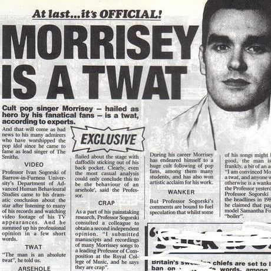

In May 1982, Johnny Marr and his friend Steve Pomfret went to the home of Steven Morrissey in Stretford to invite him to form a band. Marr and Morrissey had met at a Patti Smith gig at Manchester's Apollo Theatre on 31 August 1978, when Marr was 14 and Morrissey was 19. They bonded through their love of poetry and literature. A fan of the New York Dolls, Marr had been impressed that Morrissey had written a book on the band and was inspired to turn up on his doorstep following the example of Jerry Leiber, who had formed his working partnership with Mike Stoller after turning up at Stoller's door. According to Morrissey: "We got on absolutely famously. We were very similar in drive." The two found that they were fans of many of the same bands. When Marr looked through Morrissey's singles collection, he found the Monochrome Set, a band they both admired. The next day, Morrissey phoned Marr to confirm that he would be interested in forming a band with him.
A few days later, Morrissey and Marr held their first rehearsal in Marr's rented attic room in Bowdon. Morrissey provided the lyrics for "Don't Blow Your Own Horn", the first song that they worked on; however, they decided against retaining the song, with Marr commenting that "neither of us liked it very much". The next song that they worked on was "The Hand That Rocks the Cradle", which again was based on lyrics produced by Morrissey. Marr based the tempo on the Patti Smith song "Kimberly", and they recorded it on Marr's TEAC four-track cassette recorder. The third track that the duo worked on was "Suffer Little Children". Alongside these original compositions, Morrissey suggested that the band produce a cover of "I Want a Boy for My Birthday", a song by the 1960s American girl group the Cookies; although he had never heard of the song before, Marr agreed, enjoying the subversive element of having a male vocalist sing it, and the song was recorded on his TEAC machine.
By late 1982, Morrissey had chosen the band name the Smiths. He said later that "it was the most ordinary name and I thought it was time that the ordinary folk of the world showed their faces". Around the time of the band's formation, Morrissey decided that he would be publicly known only by his surname, with Marr referring to him as "Mozzer" or "Moz". In 1983, he forbade those around him from using the name "Steven", which he despised.
After remaining with the band for several rehearsals, Pomfret departed acrimoniously. He was replaced by the bass player Dale Hibbert, who worked at Manchester's Decibel Studios, where Marr had met him while recording Freak Party's demo. Through Hibbert, the Smiths recorded their first demo at Decibel one night in August 1982. Aided by drummer Simon Wolstencroft, whom Marr had worked with in Freak Party, the band recorded both "The Hand That Rocks the Cradle" and "Suffer Little Children". Wolstencroft was not interested in joining the band, so following auditions Mike Joyce joined; he later revealed that he was under the influence of magic mushrooms during his audition. Meanwhile, Morrissey took the demo recording to Factory Records, but Factory's Tony Wilson was not interested.
In October 1982, the Smiths gave their first public performance as a support act for Blue Rondo à la Turk during a student music and fashion show, "An Evening of Pure Pleasure", at Manchester's Ritz. During the performance, they played both their own compositions and "I Want a Boy for My Birthday". Morrissey had organised the gig's aesthetic; the band came onstage to Klaus Nomi's version of Henry Purcell's "The Cold Song" playing through the venue's sound system before his friend James Maker stepped onstage to introduce the band. Maker remained onstage during the performance, relating that "I was given a pair of maracas – an optional extra – and carte blanche. There were no instructions – I think it was generally accepted I would improvise... I was there to drink red wine, make extraneous hand gestures and keep well within the tight, chalked circle that Morrissey had drawn around me." Hibbert was allegedly unhappy with what he perceived as the band's "gay" aesthetic; in turn, Morrissey and Marr were unhappy with his bass playing, so he was replaced by Marr's old schoolfriend Andy Rourke. Hibbert denies that he objected to the band being perceived as gay, and said he was not sure why he was asked to leave.
In December 1982, the Smiths recorded their second demo, at the Drone Studios in Chorlton-cum-Hardy; the tracks recorded were "What Difference Does It Make?", "Handsome Devil" and "Miserable Lie". This was used as their audition tape for the record company EMI, who turned the band down. The band continued to practice, this time at the upstairs of the Portland Street Crazy Face Clothing company, a space secured by their new manager Joe Moss. By Christmas, they had written four new songs: "These Things Take Time", "What Do You See in Him?", "Jeane" and "A Matter of Opinion", the last of which they soon scrapped. Their next gig was Manchester's Manhattan in late January 1983, and although Maker would again appear as a go-go dancer, this was the last time that he did so. In early February, they performed their third gig, at the Haçienda.
Marr and Rourke visited London to hand a cassette of their recordings to Geoff Travis of the independent record label Rough Trade Records. Travis agreed to cut their song "Hand in Glove" as a single. For the cover, Morrissey insisted on a homoerotic photograph by Jim French which he had found in Margaret Walters' The Nude Male. The single was released in May 1983, and sold well for the next 18 months, but did not chart in the UK Top 40. Among the audience at the Smiths' second London concert, at the University of London Union, was John Walters, the producer of John Peel's BBC Radio 1 show: he invited the band to record a session for the programme. Peel said: "You couldn't immediately tell what records they'd been listening to. That's fairly unusual, very rare indeed... It was that aspect of the Smiths that I found most impressive." Following this radio exposure, the Smiths gained their first interviews, in the music magazines NME and Sounds.
Travis travelled to Manchester to meet the band at their Crazy Face rehearsal space and sign a record contract with Rough Trade. Morrissey and Marr signed it on behalf of the band, and there was no discussion of how earnings would be divided. Travis brought in Troy Tate of the Teardrop Explodes, and under his supervision the band recorded their debut album, at the Elephant Studios in Wapping, East London. Rough Trade were unhappy with the album and Tate's production, insisting the band rerecord it with a new producer, John Porter. The singles "This Charming Man" and "What Difference Does It Make?" reached numbers 25 and 12 respectively on the UK Singles Chart. Aided by praise from the music press and a series of studio sessions for Peel and David Jensen at BBC Radio 1, the Smiths began to build a dedicated fanbase.
The Smiths generated controversy when Garry Bushell of The Sun tabloid alleged their B-side "Handsome Devil" was an endorsement of paedophilia. The band denied this, with Morrissey stating the song "has nothing to do with children, and certainly nothing to do with child-molesting".
In February 1984, the Smiths released their debut album, The Smiths, which reached number two on the UK Albums Chart. "Reel Around the Fountain" and "The Hand That Rocks the Cradle" met with controversy, with some tabloid newspapers alleging the songs were suggestive of paedophilia, a claim strongly denied by the group. In March 1984, the Smiths performed on Channel 4 music program The Tube.
The album was followed the same year by the non-album singles "Heaven Knows I'm Miserable Now" and "William, It Was Really Nothing", which featured "How Soon Is Now?" on its B-side. Securing the band's first top ten placing, "Heaven Knows I'm Miserable Now" was also significant for marking the beginning of engineer and producer Stephen Street's long-term working relationship with the band.
More controversy followed when "Suffer Little Children", the B-side to "Heaven Knows I'm Miserable Now", touched on the theme of the Moors murders. This caused an uproar after the grandfather of one of the murdered children heard the song on a pub jukebox and felt the band was trying to commercialise the murders. After meeting with Morrissey, he accepted that the song was a sincere exploration of the impact of the murders. Morrissey subsequently established a friendship with Ann West, the mother of victim Lesley Ann Downey, who is mentioned by name in the song.
The year ended with the release of the compilation album Hatful of Hollow, a collection of singles, B-sides and tracks recorded throughout the previous year for the Peel and Jensen radio shows.
Early in 1985, the Smiths released their second studio album, Meat Is Murder. It was more strident and political than its predecessor, including the pro-vegetarian title track (Morrissey forbade the rest of the group from being photographed eating meat), the light-hearted republicanism of "Nowhere Fast", and the anti-corporal punishment "The Headmaster Ritual" and "Barbarism Begins at Home". The band had also grown more diverse musically, with Marr adding rockabilly riffs to "Rusholme Ruffians" and Rourke playing a funk bass solo on "Barbarism Begins at Home". The album was preceded by the re-release of the B-side "How Soon Is Now?" as a single, and although that song was not on the original LP, it has been added to subsequent releases. Meat Is Murder was the band's only album (barring compilations) to reach number one on the UK charts.
Morrissey brought a political stance to many of his interviews, courting further controversy. Among his targets were the Thatcher government, the British monarchy and the famine relief project Band Aid. Morrissey famously quipped of the last, "One can have great concern for the people of Ethiopia, but it's another thing to inflict daily torture on the people of England" ("torture" being a reference to the music that resulted from the project). The subsequent single-only release "Shakespeare's Sister" reached number 26 on the UK Singles Chart, although the only single taken from the album, "That Joke Isn't Funny Anymore", was less successful, barely making the top 50. In 1985, the Smiths completed lengthy tours of the UK and the US.
The Smiths' third studio album, The Queen Is Dead, was released in June 1986, following its singles "The Boy with the Thorn in His Side" and "Bigmouth Strikes Again". Marr used a E-mu Emulator on tracks such as "There Is a Light That Never Goes Out" and "The Boy with the Thorn in His Side" to create the sound of a string section. The Queen Is Dead reached number two on the UK charts.
A legal dispute with Rough Trade had delayed the album by almost seven months (it had been completed in November 1985), and Marr was beginning to feel the stress of the band's exhausting touring and recording schedule. He later told NME, "'Worse for wear' wasn't the half of it: I was extremely ill. By the time the tour actually finished it was all getting a little bit ... dangerous. I was just drinking more than I could handle."[56] Rourke was fired from the band in early 1986 due to his use of heroin. He allegedly received notice of his dismissal via a Post-it Note stuck to the windscreen of his car. It read, "Andy – you have left the Smiths. Goodbye and good luck, Morrissey." Morrissey denied this.
Craig Gannon, formerly a member of Scottish new wave band Aztec Camera, was scouted by Marr to replace Rourke on bass for the upcoming tour, but never played bass instead sitting in a few rehearsals as a rhythm guitarist alongside a session musician but Rourke was reinstated two weeks later. Gannon stayed in the band making them a five-piece. During this time, they recorded the singles "Panic" and "Ask" (the latter with Kirsty MacColl on backing vocals) which reached numbers 11 and 14 respectively on the UK Singles Chart, and toured the UK.
An arrest on drug possession charges almost led to Rourke being replaced by Guy Pratt for the band's North American tour later that year. Rourke's work visa came through just before departure. While the shows were successful, heavy drinking and drug use by crew and band members other than Morrissey took a toll on the group, along with ineffective management and lingering disputes with Rough Trade (whom the band was seriously considering leaving for EMI) and their American label Sire Records (who Morrissey felt did not do enough to promote the Smiths). After a date in St. Petersburg, Florida, he and Marr cancelled the remaining four shows, including a grand finale at New York City's Radio City Music Hall. After the following UK tour ended in October 1986, relations between Marr and Gannon broke down. According to Gannon he was simply not called back for further rehearsals. A few weeks later Gannon's friend and future Smiths guitarist Ivor Perry informed him that according to Travis he was no longer in The Smiths.[60]. During his time with the Smiths, Gannon played on seven studio tracks ("Panic" and "Ask", their B-sides "The Draize Train" and "Golden Lights", as well as "Half a Person" and "London", both of which were released as B-sides the following year, and "You Just Haven't Earned It Yet, Baby", which first appeared on the compilation album The World Won't Listen also the following year). On 12 December 1986 the band performed their last concert, an anti-apartheid benefit at Brixton Academy, London.
As they had been severed from the contract with Rough Trade records, the band sought a new deal with a major label. Marr told NME in early 1987, "Every single label came to see us. It was small-talk, bribes, the whole number. I really enjoyed it." The band signed with EMI, which drew criticism from their fanbase and elements of the music press.
"The Smiths brought realism to their romance, and tempered their angst with the lightest of touches. The times were personified in their frontman: rejecting all
taints of rock n' roll machismo, he played up the social awkwardness of the misfit and the outsider, his gently haunting vocals whooping suddenly upward into a
falsetto, clothed in outsize women's shirts, sporting National Health specs or a huge Johnny Ray-style hearing aid. This charming young man was, in the vernacular of
the time, the very antithesis of a 'rockist' – always knowingly closer to the gentle ironicist Alan Bennett, or self-lacerating diarist Kenneth Williams, than a
licentious Mick Jagger or a drugged-out Jim Morrison."
— Paul A. Woods, 2007
Despite their continued success, tensions emerged within the band. Marr was exhausted and took a break in June 1987, which he felt was negatively perceived by his. In July, he left the group because he erroneously believed an NME article titled "Smiths to Split" was planted by Morrissey. The article, written by Danny Kelly, alleged that Morrissey disliked Marr working with other musicians and that Marr and Morrissey's personal relationship had reached a breaking point. Marr contacted NME to explain that he had not left the band due to personal tensions but because he wanted wider musical scope. The former Easterhouse guitarist Ivor Perry was brought in to replace Marr. The band recorded material with him which was never completed, including an early version of "Bengali in Platforms", later released on Morrissey's debut solo album, Viva Hate (1988). Perry was uncomfortable, saying "it was like they wanted another Johnny Marr"; according to Perry, the sessions ended with Morrissey running out of the studio.

By the time Strangeways, Here We Come was released in September, the Smiths had split. The break up has been primarily attributed to Morrissey's irritation with Marr's work with other artists and Marr's frustration with Morrissey's musical inflexibility. Marr particularly hated Morrissey's obsession with covering 1960s pop artists such as Twinkle and Cilla Black, saying in 1992: "That was the last straw, really. I didn't form a group to perform Cilla Black songs."[71] In a 1989 interview, Morrissey cited the lack of a managerial figure and business problems as reasons for the split.
Strangeways, Here We Come reached number two in the UK in October 1987, and was the Smiths' most successful album in the US, reaching number 55 on the Billboard 200. Morrissey and Marr name it as their favourite Smiths album. Two further singles from Strangeways were released with live, session and demo tracks as B-sides. The following year, the live album Rank, recorded in 1986 when Craig Gannon was still in the band, reached number 2 in the UK and entered in the European 100 Albums chart at number 9.
Morrissey and Marr each took 40% of the Smiths' recording and performance royalties, allowing 10% each to Joyce and Rourke. Joyce's barrister later argued in court, that Joyce and Rourke were treated as session musicians, "as readily replaceable as the parts in a lawnmower". In March 1989, Joyce and Rourke started legal proceedings against Morrissey and Marr. They argued that they were equal partners in the Smiths and were each entitled to a 25 per cent share of the band's profits on all activities other than songwriting and publishing. Rourke, who was in debt, settled quickly for a lump sum of £83,000 (equivalent to £260,824 in 2023) and 10 per cent of royalties, renouncing all further claims.
Joyce continued with the action, which reached the High Court of Justice (Chancery Division) in December 1996. Morrissey and Marr had accepted the previous year that Joyce and Rourke were partners, but whether Joyce was entitled to a quarter of profits "arising out of the activities (other than songwriting or publishing)" of the Smiths remained contentious. Joyce's barrister, Nigel Davis, said that Joyce did not realise he was receiving only 10% of the profits until after the band split.
Morrissey and Marr – who were represented separately at the trial – insisted that the royalty split had been explained to Rourke and Joyce, though they were no longer sure when. Additionally, this agreement was only discussed verbally and it was never legally written on paper, something Marr came to regret. He said in 2004 that although he had no regrets in breaking up the Smiths, he wished the band had signed legal documents "from the word go" to avoid the later financial disagreements.[80] As Marr's counsel, Robert Englehart, said, "Some 13 years on it is extremely difficult to pinpoint the moment when the 40:40:10:10 profit split came into being ... But Morrissey and Marr acted throughout on the basis that they would be getting 40 percent each of the net profits from the Smiths' earnings.
After a seven-day hearing, Judge Weeks found in favour of Joyce, ordering that he receive around £1 million in back-royalties and 25 per cent henceforth.
The judge also gave character assessments; Joyce and Rourke (who gave evidence in Joyce's support) impressed him as straightforward and honest, whereas
Morrissey "appeared devious, truculent and unreliable where his own interests were at stake" and Marr was "willing to embroider his evidence to a point where he
became less credible". The judge also said that Marr was "probably the more intelligent of the four", and that Rourke and Joyce were "unintellectual".
Morrissey said in an interview eight months later:
The court case was a potted history of the life of the Smiths. Mike [Joyce], talking constantly and saying nothing. Andy [Rourke], unable to remember his own
name. Johnny [Marr], trying to please everyone and consequently pleasing no one. And Morrissey under the scorching spotlight in the dock being drilled.
"How dare you be successful?" "How dare you move on?" To me, the Smiths were a beautiful thing and Johnny left it, and Mike has destroyed it.
Asked some time before the trial whether he thought Rourke and Joyce had been short-changed, Morrissey responded: "They were lucky. If they'd had another singer they'd never have got further than Salford Shopping Centre."Morrissey's counsel, Ian Mill, conceded that Morrissey's attitude "betrayed a degree of arrogance". Morrissey appealed against the verdict; the appeal was heard by the Court of Appeal (Civil Division) in November 1998 and dismissed. Inspired by Joyce's success, Rourke sought legal advice on his own options.[88] He was declared bankrupt in 1999.
In November 2005, Joyce told Marc Riley on BBC Radio 6 Music that financial hardship had reduced him to selling rare Smiths recordings on eBay. By way of illustration, Riley played part of an unfinished instrumental known as the "Click Track" (or "Cowbell Track").[90] Morrissey responded with a statement three days later revealing that Joyce had received £215,000 each from Marr and Morrissey in 1997, along with Marr's final backpayment of £260,000 in 2001. Morrissey failed to make his final payment because, he said, he was overseas in 2001 and did not receive the paperwork. Joyce obtained a default judgement against Morrissey, revised his outstanding claim to £688,000 and secured orders garnishing much of his income. This was a source of grievance to Morrissey, who estimated that Joyce had cost him at least £1,515,000 in recovered royalties and legal fees up to 30 November 2005.